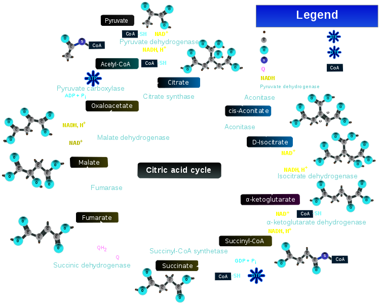
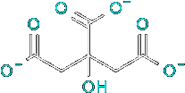
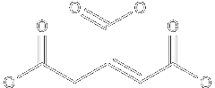
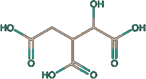

Citric acid Cycle
The citric acid cycle (CAC) – also known as the TCA cycle (tricarboxylic acid cycle) or the Krebs cycle – is a series of chemical reactions used by all aerobic organisms to release stored energy through the oxidation of acetyl-CoA derived from carbohydrates, fats, and proteins, into adenosine triphosphate (ATP) and carbon dioxide. In addition, the cycle provides precursors of certain amino acids, as well as the reducing agent NADH, that are used in numerous other reactions. Its central importance to many biochemical pathways suggests that it was one of the earliest established components of cellular metabolism and may have originated abiogenically. Even though it is branded as a 'cycle', it is not necessary for metabolites to follow only one specific route; at least three segments of the citric acid cycle have been recognized.
The name of this metabolic pathway is derived from the citric acid (a tricarboxylic acid, often called citrate, as the ionized form predominates at biological pH[6]) that is consumed and then regenerated by this sequence of reactions to complete the cycle.
One of the primary sources of acetyl-CoA is from the breakdown of sugars by glycolysis which yield pyruvate that in turn is decarboxylated by the pyruvate dehydrogenase complex generating acetyl-CoA according to the following reaction scheme:
CH3C(=O)C(=O)O−pyruvate + HSCoA + NAD+ → CH3C(=O)SCoAacetyl-CoA + NADH + CO2
Unlike glycolysis, which takes place in the cytosol, the citric acid cycle occurs in mitochondria, within the bounds of the internal membrane. All of the enzymes are located in the mitochondrial matrix except the enzyme for reaction 6, succinate dehydrogenase. Pyruvate must first pass through a transporter into this organelle. There, pyruvate will find pyruvate dehydrogenase, a large, multisubunit protein made up of three enzymes involved in the production of aceryl-CoA plus to enzime activities involce in control of the enzymes.
acetil-CoA + 3 NAD+ + GDP + FAD + ADP + Pi + 2 H2O → CoA + 3 NADH + 3 H+ + FADH2 + ATP + GTP + 2 CO2
Aconitase Interconverts Citrate and Isocitrate
Aconitase catalyzes the reversible isomerization of citrate and isocitrate, with cis-aconitate as an intermediate:
| Citrate | H2O ↺ ⇌ | cis-Aconitate | H2O ↷ ⇌ | Isocitrate |
The reaction begins with a dehydration step in which a proton and an OH group are removed. Since citrate has two carboxymethyl groups substituent to its central C atom, it is prochiral rather than chiral. Thus, although water might conceivably be eliminated from either of the two carboxymethyl arms, aconitase removes water only from citrate’s lower (pro-R) arm (i.e., such that the product molecule has the R configuration; Box 4-2). Aconitase contains a [4Fe−4S] iron–sulfur cluster (an arrangement of four iron atoms and four sulfur atoms, Section 18-2C) that presumably coordinates the OH group of citrate to facilitate its elimination. Iron–sulfur clusters normally Section 3 Enzymes of the Citric Acid Cycle participate in redox processes; aconitase is an intriguing exception.
The second stage of the aconitase reaction is rehydration of the double bond of cis-aconitate to form isocitrate. Although addition of water across the double bond of cis-aconitate could potentially yield four stereoisomers, aconitase catalyzes the stereospecific addition of OH− and H+ to produce only one isocitrate stereoisomer. The ability of an enzyme to diff erentiate its substrate’s pro-R and pro-S groups was not appreciated until 1948, when Alexander Ogston pointed out that aconitase can distinguish between the two —CH2COO− groups of citrate when it is bound to the enzyme (Section 11-1B).
Aconitase Functions as an Iron Sensor
Nature is opportunistic in that it often finds more than one use for a protein, a phenomenon dubbed moonlighting (after the practice of taking a second job, often at night, when the moon often shines). Aconitase is such a multifunctional protein. Cells require a balanced amount of iron. Too little and their many iron-containing proteins will lose function, whereas too much is toxic, particularly to the liver, heart, and pancreas, causing a life-threatening condition known as hemochromatosis. Dietary iron is transported through bloodstream by the protein transferrin, enters cells through receptor-mediated endocytosis (Section 20-1B) in which the receptor is transferrin receptor, and any excess iron is stored by the protein ferritin. When a cell has insufficient iron, its aconitase is inactivated through the loss of its [4Fe–4S] iron–sulfur cluster. The resulting protein, which undergoes extensive conformational changes to become known as iron regulatory protein-1 (IRP1), binds to specific sequences on the mRNAs encoding the transferrin receptor and ferritin. This inhibits the degradation of the transferrin receptor mRNA, resulting in an increased rate of synthesis of transferrin receptor, whereas it blocks the translation of the ferritin mRNA. A cell’s rate of iron uptake is thereby ncreased, whereas its amount of ferritin-bound iron is decreased.